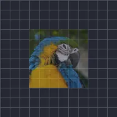

Pulserende dekking

Laat de laag steeds opnieuw uit- en infaden, op een sinus- of driehoeksgolf.
Instellingen
| Instelling | Type | Bereik | Standaard |
|---|---|---|---|
| Frequentie | Getal | 0.1 Hz tot 16 Hz | 2 Hz |
| Sterkte | Getal | 0% tot 100% | 100% |
| Startfase | Getal | 0 tot 2 | 0 |
| Golf | Keuze | Sinus, Driehoek | Sinus |